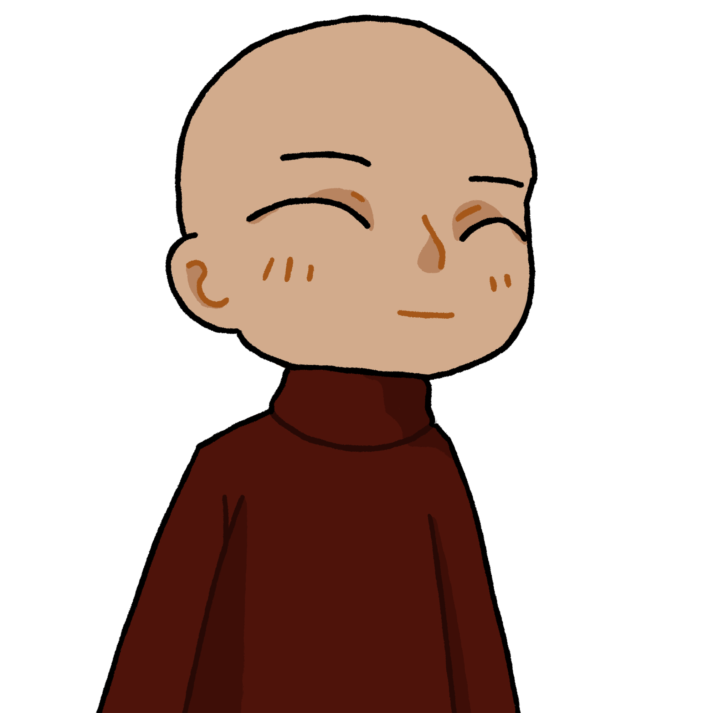

Holalalala ! Mais qu’es-ce qu’on peux faire !
Holalalala ! Mais qu’es-ce qu’on peux faire !
 Tais-toi Ivan j’aimerais dormir. On cherchera demain je t’ai dit.
Tais-toi Ivan j’aimerais dormir. On cherchera demain je t’ai dit.
Samy avait déplacé chaque Kidum, mais rien a faire, il ne retrouvait pas la notice qu’il avait eu avec le bloc. Tant pis s’était-il dit, ils reprendraient les recherches à tête reposer. Ceci dit, outre la disparition de Léopold, des problèmes bien plus graves tourmentaient Samy. Le génie avait pris en compte le souhait de Léopold malgré tout, et il savait ce que cela impliquait… Leur retour. Ceci dit tant qu’il avait le bloc de mousse, ils n’avaient rien à craindre. Après à peine quelques heures de sommeil, Samy fut réveillez par Ivan qui lui donnait des coups de pied dans le ventre.
Putain le bloc a disparu !
QUOI ?!
Samy se redressa d’un coup et scruta sa grotte, sans retrouver son précieux bloc. À la place, il retrouva un bout de papier chiffonné, comportant un message à peine lisible tant s’était mal écrit.
Ça dit quoi ?
« Chers blaireaux, … ».
Ça commence bien…
« Je vous remercie pour votre sacrifice, et afin de vous récompenser convenablement, je souhaite provoquer une rencontre à l’adresse joint à ce message. ».
Même pas en rêve ! Ça pue le piège !
« Afin de m’assurer que vous veniez, je vous substitue votre bloc en mousse au pouvoirs inestimables. Si jamais vous ne vous présentez pas sous un délai d’une semaine, je me servirais de la semence accumulée pour créer une armée de clone. ».
Ah merde.
« P.S. : Bien ta grotte ? ».
Mais attend, qui a bien put faire le coup ?
T’a vraiment pas changé toi… C’est Matéo et sa troupe d’attardés ! Ils veulent nous arrêter encore une fois dans notre objectif de faire barrage à la décadence !
Dixit celui qui se branle dans de la mousse avec des godes pour enfants…
Pardon ?
Non rien !
Tandis que Samy calculait combien de clone on pouvait faire avec son nombre de masturbation par jour, Ivan cherchait où menait l’adresse liée au message.
J’ai trouvé ! C’est le hameau de Courtevroust.
Pourquoi cet endroit spécifiquement ?
J’en sais rien… Mais il faut qu’on y aille !
T’es au courant que c’est un gros piège de ses morts ?
On a pas le choix, ils ont Léopold !
Ivan… bon. T’a un plan au moins ?
On improvisera ! Aller sors ta moto on y va !
Je sais pas si t’as remarqué mais on est au Maroc. Le région parisienne c’est un chouilla loin.
On peut prendre un bateau vers Gibraltar, ce sera plus court !
Bon eh bien… C’est reparti pour une journée à moto.
Et ils s’en allèrent ainsi dans le désert, tel deux chevalier à dos de moto, Samy et Ivan contre tout chacal, aventuriers contre tout guerriers, y compris quand ceux-ci sont douaniers.
Attend quoi ?
Bah ouais mec, je suis recherché par la police donc on va sûrement se faire arrêter à Fnideq, et par toute la garde national. Mais t’inquiète, j’ai un plan. Tu seras surpris de voir qui est le chef de la police…
Putain arrête de me putacliquer !
Ils arrivèrent à la frontière espagnole en fin d’après-midi, qui comme l’avait prévu Samy, était protégée par une centaine de gardes. Pourtant, Samy ne ralentis pat sa moto.
Eh mais attend c’est pas…
Si !
 Vous arrêtez vos bêtises mainten…
Samy le percuta de plein fouet, lui roula dessus, et s’en servit comme tremplin pour sauter la barrière. Malheureusement, il furent encerclés par les gardes armés de sabres, sans possibilité d’échappatoire.
Et merde !
Adieux Léopold…
 À TERRE !
À TERRE !
Samy et Ivan se jetèrent de la moto pile avant qu’une rafale de balle soit tirée, abattant tout les gardes.
C’est qui encore ce malade ?!
C’est moi !
Mais c’est…
 Appelez moi colonel. Colonel Makaya.
Appelez moi colonel. Colonel Makaya.